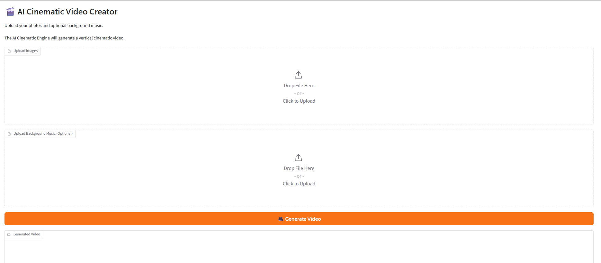
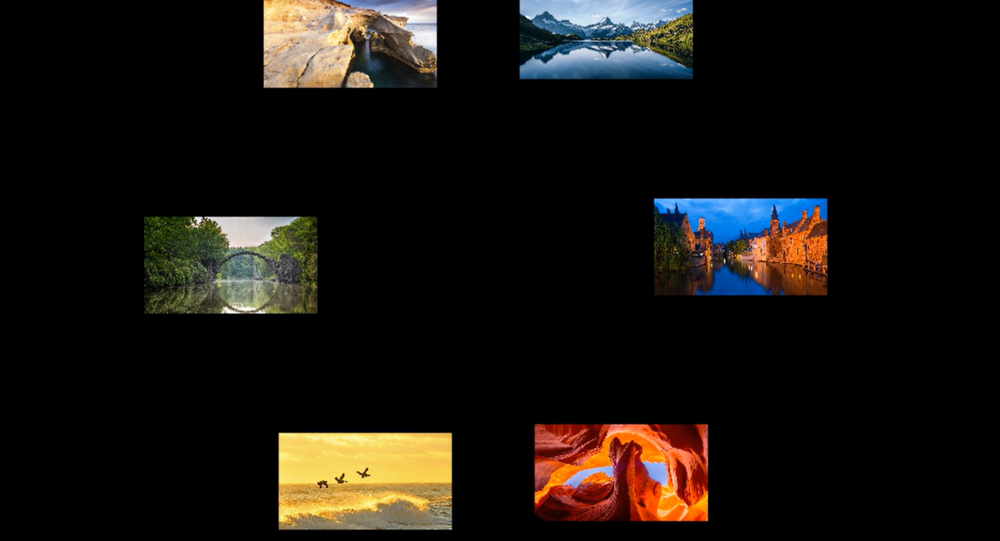
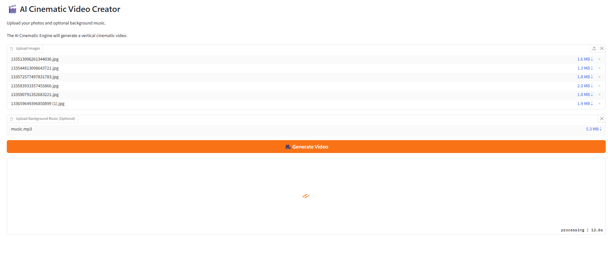

Senior DevOps Engineer | Cloud Automation | AI Engineering
AWS | Kubernetes | Terraform | Docker | CI/CD | Python
Senior DevOps Engineer with 9+ years of experience designing, automating, and supporting cloud infrastructure, CI/CD pipelines, and production systems.
Specialized in AWS cloud engineering, Infrastructure as Code, Kubernetes automation, DevSecOps practices, and AI-powered application development.
An AI-powered cinematic video generation platform that transforms static images and music into professional travel videos using Python, custom rendering engines, FFmpeg, MoviePy, and Gradio.



Technology: Python | FFmpeg | MoviePy | Gradio | Hugging Face
Cloud platform architecture using Infrastructure as Code, container orchestration, monitoring, and automation.
Technology: AWS | Terraform | EKS | Kubernetes | Helm | Prometheus | Grafana
Automated delivery pipeline implementing continuous integration, security scanning, containerization, and deployment automation.
Technology: Jenkins | GitHub Actions | Maven | Docker | SonarQube | Git
HashiCorp Certified: Terraform Associate
GitHub: github.com/monkamtanyi
LinkedIn: LinkedIn Profile